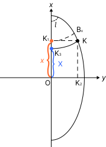

ВЫЧИСЛЕНИЕ ГЕОДЕЗИЧЕСКИХ КООРДИНАТ
ПО ПЛОСКИМ ПРЯМОУГОЛЬНЫМ КООРДИНАТАМ
ГАУССА – КРЮГЕРА
Обратное преобразование плоских прямоугольных координат (x′, y′) в геодезические координаты (B, L) на поверхности референц-эллипсоида
ВВЕДЕНИЕ
Обратная задача проекции Гаусса – Крюгера
Вычисление геодезических координат B и L по известным плоским прямоугольным координатам Гаусса – Крюгера x′ и y′ является обратной задачей по отношению к прямому преобразованию геодезических координат в плоские. Данная задача возникает при обработке полевых измерений, переводе данных из кадастровых и топографических источников в геодезические системы координат, а также при решении геодезических задач на эллипсоиде.
В отличие от прямого преобразования, обратное не имеет замкнутого аналитического решения и требует применения итерационных или разложенных в ряд методов. В геодезической практике наибольшее распространение получил метод, основанный на разложении в ряд по степеням эксцентриситета эллипсоида с использованием вспомогательной широты Bx.
ГЕОМЕТРИЧЕСКАЯ ИНТЕРПРЕТАЦИЯ
Связь плоских и геодезических координат

Обозначения на рисунке
Погрешность вычисления геодезических координат по формулам обратного преобразования не превышает 0,0001″ при разности долгот l до 3°30′, что соответствует требованиям к точности геодезических вычислений.
НОМЕР ЗОНЫ И ДЕЙСТВИТЕЛЬНЫЕ КООРДИНАТЫ
Переход от условных координат x′, y′ к x, y
Номер шестиградусной зоны n определяется по условной ординате y′ путём выделения целой части от деления на 10⁶. Действительные координаты x, y вычисляются из условных с устранением смещения оси Y на 500 000 м и номера зоны:
«Целое» означает процедуру выделения целой части путём отбрасывания дробной части.
ВСПОМОГАТЕЛЬНАЯ ШИРОТА Bx
Определение широты параллели по абсциссе x
Вспомогательная широта Bx определяется через абсциссу x с использованием коэффициентов G₀, Q₁, Q₂, Q₃:
ГЕОДЕЗИЧЕСКАЯ ШИРОТА B И РАЗНОСТЬ ДОЛГОТ l
Уточнение B и вычисление l через Bx
Геодезическая широта B и разность долгот l вычисляются через вспомогательную широту Bx с использованием радиуса кривизны первого вертикала Nx, вычисленного по широте Bx:
где ηx² = e′² cos² Bx, ρ = 206264,8062″ — число секунд в радиане.
ГЕОДЕЗИЧЕСКАЯ ДОЛГОТА L
Долгота осевого меридиана и итоговая долгота точки
Долгота осевого меридиана L₀ шестиградусной зоны вычисляется по номеру зоны n, а геодезическая долгота L точки определяется как сумма:
Для трёхградусных зон долгота осевого меридиана вычисляется по формуле L₀ = 3° · n′, где n′ — номер трёхградусной зоны.